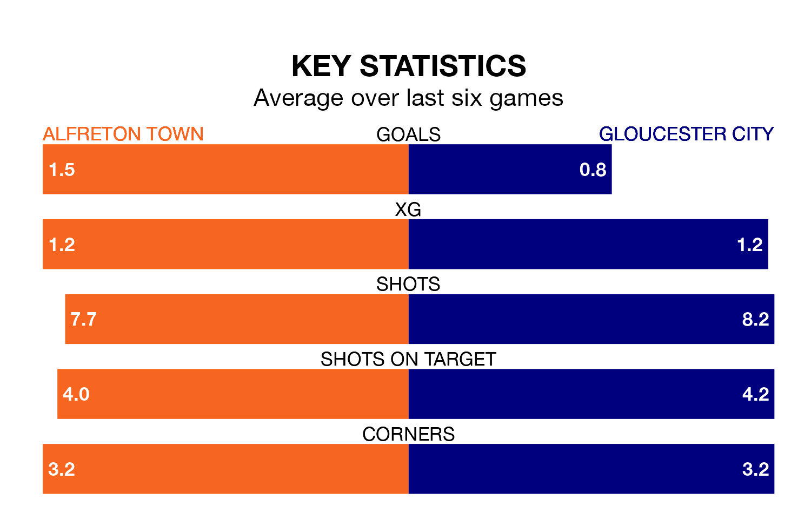

Alfreton Town are heavy favourites to keep all three points at home in Tuesday's late kick-off against Gloucester City.
The Reds, who sit sixth in the National League North with 43 games played, are priced at 1.4 to seal victory at the Impact Arena.
Sitting 17 places and 35 points behind them in the table, Gloucester are 6.2 to win with *Betting Company*, while the draw is at 4.7.
With 70 goals in 43 games so far this season, Alfreton are scoring more than average in the league with 1.6 goals per game. And they are conceding fewer than average, letting in 49 goals at a rate of 1.1 per game.
Gloucester, meanwhile, are below average scorers, with 1.1 goals per game, compared to a league average of 1.3. They have conceded 1.9 goals per game.
In the last 10 years, Alfreton and Gloucester have played each other on 10 occasions. Alfreton won one of them, Gloucester four, and they drew five times.
On average, the Reds scored 1.1 goals and the Tigers 1.6 in those matches.
Their last meeting was on October 21, when Gloucester won 3-0 at home.
Town are in reasonable form in the National League North, with three wins and two draws from their last six games.
With a win and a draw over that period, City's form is much worse – they have taken four points from 18, compared to the Reds' 11.
Alfreton's last match was on Saturday, a 0-0 draw against Curzon Ashton.
Gloucester lost 6-1 against Chester last time out, also on Saturday.
Updated: 14:47 (UTC), 09/04/24